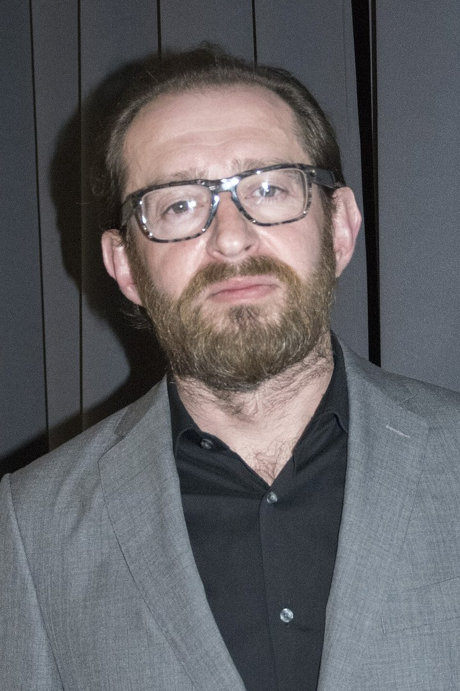
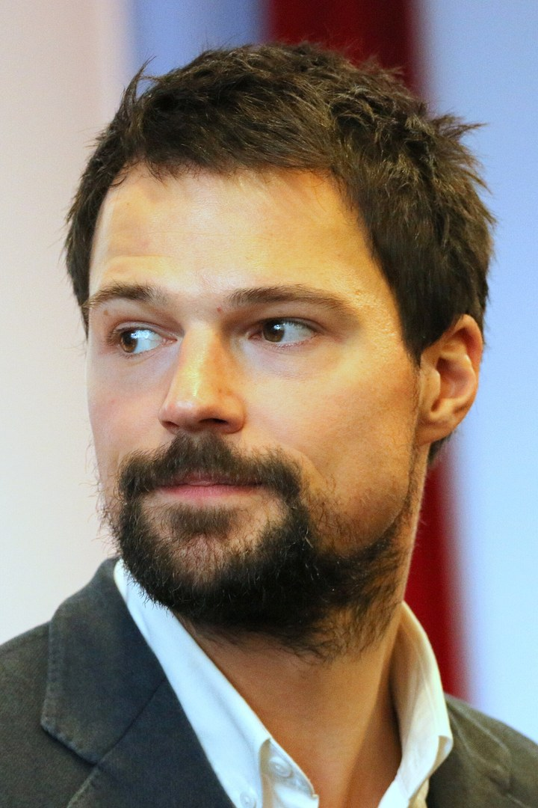
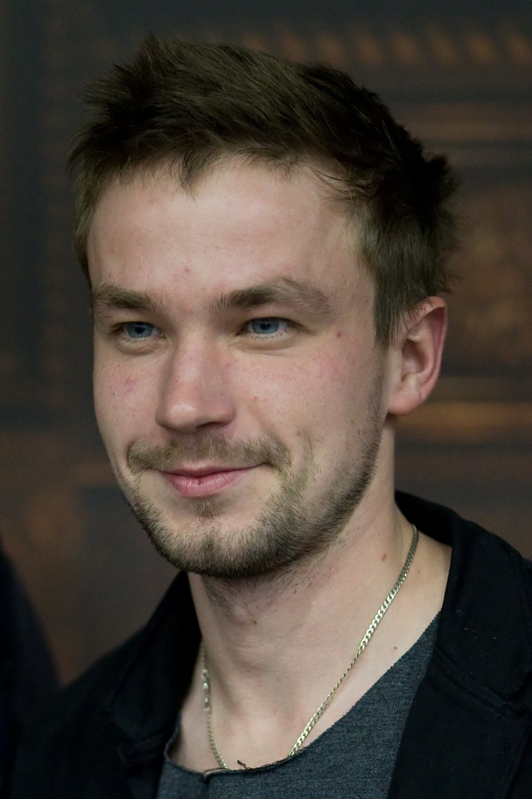
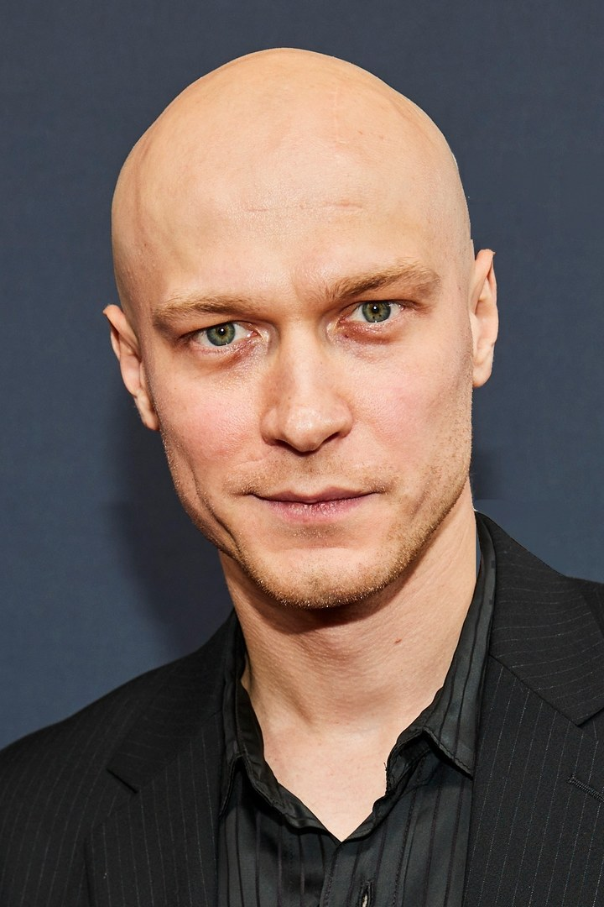
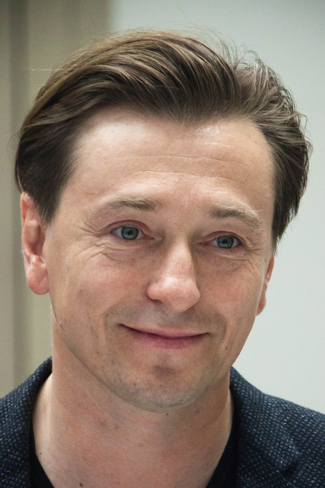
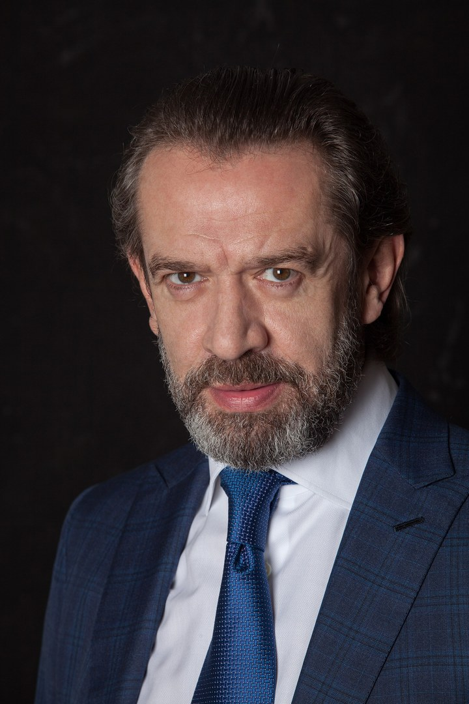

Какую роль из детства вы играете рядом с мужчиной
Найдите мужчину, которого выбрали в ролике. В его разделе – какая энергия вас зовёт, какую роль вы играете рядом с мужчиной, откуда она взялась в детстве и почему не уходит даже рядом с «тем самым». А ещё – 1 фраза на эту неделю, с которой вы начнёте выходить из роли.
Почему один мужчина отзывается сразу
Вы смотрели на 6 мужчин, и один зацепил быстрее, чем вы успели подумать. Так откликается не вкус, а роль, которую вы с детства играете рядом с мужчиной. Сильная, правильная, понимающая, взрослая не по годам – каждая ищет мужчину, рядом с которым эту роль можно наконец снять.
Роль кажется характером, поэтому её трудно заметить. Но именно она решает, к кому вас тянет и на что вы потом обижаетесь.
Проверьте себя за 1 минуту
Мужчину вы выбрали за секунду. Теперь проверьте, какая роль стоит за выбором: ответьте на 3 вопроса и в каждом запомните цифру варианта. Это поможет и тем, кто забыл свою цифру.
3 вопроса, 1 минута
- 1Какой вы были в семье в детстве?
Та, кто всех выслушает и поймёт (1), хорошая девочка, которая всё делает правильно (2), старшая, на которой младшие и дом (3), умница, которой нельзя ошибаться (4), тихая, которая не плачет и не спорит (5), самостоятельная, которая со всем справляется сама (6) - 2На что вы чаще всего обижаетесь на мужчин?
Он меня не слышит (1), с ним всё предсказуемо и скучно (2), всё на мне, он как ребёнок (3), он не знает, какая я на самом деле (4), с ним то бури, то холодно (5), мне не на кого опереться (6) - 3Какую фразу вам труднее всего сказать мужчине?
«Выслушай меня» (1), «Давай сделаем что-нибудь безумное» (2), «Реши это сам» (3), «Мне плохо» (4), «Я злюсь» (5), «Помоги мне» (6)
Ваш раздел – раздел мужчины, которого вы выбрали: там роль, которую выдаёт ваш выбор. Если в ответах чаще выпала другая цифра, прочитайте и её раздел: у многих женщин 2 роли, и выбор показывает ту, что ярче включается рядом с мужчиной.
Мужчины рядом сейчас нет? Скажите фразу из своего раздела близкому человеку: роль включается не только с мужчиной.
6 мужчин: какая энергия вас зовёт и какая роль стоит за выбором
1Глубина: Константин Хабенский

Ваша роль – Понимающая. Вы слушаете, вникаете, объясняете и чувствуете настроение другого раньше, чем он сам.
Откуда она. В детстве могли говорить: «не до тебя сейчас», «потом расскажешь». Взрослые были заняты своим, и вы научились понимать их без слов. Казалось, что вас саму слушают мало.
Почему вас тянет к нему. В его образе – мужчина, который понимает без лишних слов. Рядом с таким кажется: наконец услышат и вас.
Почему роль не уходит и во что это обходится. Вы ждёте, что он догадается сам, и молчите о том, чего хотите. А потом обижаетесь: «он меня не слышит».
Это про вас, если подругам вы «жилетка», а о себе рассказываете в двух словах.
Фраза на неделю. «Мне важно, чтобы ты меня сейчас выслушал. Просто выслушал, без советов».
Что это даст. Вы заметите, как меняется разговор, когда вы говорите о себе прямо, а не ждёте, что он догадается.
2Азарт: Данила Козловский

Ваша роль – Правильная. Вы всё делаете как надо: учёба, работа, дом, обещания. Сначала дела, потом «хочу».
Откуда она. В детстве могли говорить: «веди себя прилично», «что люди скажут», «сначала уроки». Казалось, что хвалят, только когда вы не доставляете хлопот.
Почему вас тянет к нему. В его образе – мужчина, который рискует, смеётся над правилами и живёт ярко. Рядом с таким и вам будто можно.
Почему роль не уходит и во что это обходится. С надёжными мужчинами вам скучно, с азартными тревожно. Вы живёте его приключениями и становитесь той, кто за ним следит и подстраховывает.
Это про вас, если своё «хочу» вы откладываете до момента, «когда всё будет сделано».
Фраза на неделю. Скажите мужчине или подруге: «Давай сегодня без плана. Я хочу вот это» – и сделайте одно дело просто потому, что хочется.
Что это даст. Вы почувствуете, что азарт может быть вашим, а не только его, и перестанете искать его только в мужчине.
3Лёгкость: Александр Петров

Ваша роль – Взрослая. Вы рано начали отвечать за других: младших, дом, мамино настроение.
Откуда она. В детстве могли говорить: «ты же старшая», «ты у нас умная, сама разберёшься». Казалось, что быть ребёнком некогда.
Почему вас тянет к нему. В его образе – живой, порывистый, мальчишеский мужчина. Рядом с таким вы чувствуете лёгкость: будто можно не отвечать за всех.
Почему роль не уходит и во что это обходится. Вы незаметно становитесь ему мамой: напоминаете, решаете, вытаскиваете. А потом устаёте и злитесь, что всё на вас.
Это про вас, если в отношениях деньги, быт и планы чаще всего держите вы.
Фраза на неделю. «Я не буду это решать. Реши, пожалуйста, ты». И не переделывайте за ним.
Что это даст. Вы увидите, что можно не держать всё на себе, и поймёте, где готовы отпустить контроль.
4Искренность: Юра Борисов

Ваша роль – Идеальная. Вы хорошо выглядите, всё успеваете и не показываете, когда тяжело.
Откуда она. В детстве могли говорить: «соберись», «не позорь меня», «на тебя все смотрят». Казалось, что любовь нужно заслужить.
Почему вас тянет к нему. В его образе – простой, настоящий мужчина, который не играет и ничего не изображает. Рядом с таким хочется перестать стараться.
Почему роль не уходит и во что это обходится. Даже рядом с ним вы стараетесь: «всё нормально», макияж с утра, усталость спрятана. И он так и не узнаёт настоящую вас.
Это про вас, если на вопрос «как ты?» вы отвечаете «нормально», даже когда всё плохо.
Фраза на неделю. «Мне сейчас тяжело. Побудь со мной, ничего не надо делать».
Что это даст. Вы покажете себя уставшей, а не идеальной, и заметите, что при этом чувствуете.
5Страсть: Сергей Безруков

Ваша роль – Сдержанная. Вы держите чувства при себе: не плачете при людях, не спорите, не повышаете голос.
Откуда она. В детстве могли говорить: «не реви», «не кричи», «держи себя в руках». Казалось, что сильные чувства под запретом.
Почему вас тянет к нему. В его образе – мужчина, который чувствует в полную силу и не стесняется этого. Рядом с таким вы оживаете.
Почему роль не уходит и во что это обходится. Он проживает чувства за двоих, а вы выдерживаете его бури. Или выбираете спокойных и через год понимаете, что вам холодно.
Это про вас, если плачете вы только тогда, когда никто не видит.
Фраза на неделю. Один раз скажите спокойно и вслух: «Мне обидно» или «Я злюсь». Без объяснений и извинений.
Что это даст. Вы скажете о чувстве вслух и заметите, что это можно пережить. И перестанете ждать, что мужчина будет чувствовать за вас.
6Опора: Владимир Машков

Ваша роль – Сильная. Вы всё делаете сама и не просите помощи, даже когда очень нужно.
Откуда она. В детстве могли говорить: «не ной», «надейся только на себя». Опереться было не на кого. Казалось, что быть слабой опасно.
Почему вас тянет к нему. В его образе – мужчина-скала, за которым можно наконец выдохнуть.
Почему роль не уходит и во что это обходится. Даже рядом с сильным мужчиной вы не опираетесь: делаете сама, проверяете, не просите. И он перестаёт предлагать.
Это про вас, если попросить о помощи вам труднее, чем сделать самой.
Фраза на неделю. «Мне нужна твоя помощь. Сделай, пожалуйста, вот это». И примите помощь такой, какой он её оказал.
Что это даст. Вы почувствуете, каково это – попросить, и увидите, где мешаете себе принять помощь.
Почему одной фразы мало
Роль срабатывает быстрее, чем вы успеваете подумать. Фраза на неделю покажет, что из роли можно выходить. Но если вы годами выбираете похожих мужчин и снова оказываетесь в той же роли, корень глубже: в детских решениях и семейных историях. Этот корень можно убрать, и этим мы занимаемся на интенсиве «Система перехода в новую реальность за 24 часа».
Разбор помогает заметить роль, которую вы играете рядом с мужчиной. Фото: Wikimedia Commons, кадрированы. 1 – Elena Ringo, CC BY 4.0; 2 – Svklimkin, CC BY-SA 4.0; 3 – Tycho (Shansov.net), CC BY 4.0; 4 – Frank Sun, CC BY-SA 4.0, надписи фона убраны; 5 – Dmitry Rozhkov, CC BY-SA 4.0; 6 – Ксения Бубенец, CC BY-SA 4.0.

Онлайн-интенсив · 3 эфира
Система перехода в новую реальность за 24 часа
Анна Сабаврач, психотерапевт
- 10 летпрактики
- 7000+клиентов
- 3 эфирас домашними заданиями
Что будет
- 1Эфир 1«Свобода от прошлого»Находим и убираем то, что годами держало вас на месте.
- 2Эфир 2«Энергия и уровень счастья»Видите, куда каждый день утекают силы, и возвращаете себе энергию.
- 3Эфир 3«Как получать желаемое без откатов и саботажа»Ставите свою цель и получаете пошаговый план.
К чему приведёт
- найдёте, где и почему сложилась ваша роль, и начнёте убирать её корень
- вернёте силы, которые уходят на то, чтобы держать роль рядом с мужчиной
- уйдёте с пошаговым планом, как быть собой в отношениях, без откатов и саботажа
Для кого
- для тех, кого снова и снова тянет к одному типу мужчин
- кто рядом с мужчиной тянет всё на себе, сдерживается или старается, а получает мало
- кто устал обижаться, что он «не такой»
Подарки сразу после регистрации
- Демо-сессия EMDR-терапиидля быстрой проработки своего травматического запроса, снятия внутреннего напряжения, улучшения состояния и изменения реакций психики без откатов.
- Расстановочная практика «Почему у меня до сих пор нет того, чего я хочу», 20 минутпоказывает скрытые причины, из-за которых желаемое не приходит.
- Тест «Где мой затык» с расшифровкойпокажет, какая установка держит вас на месте.
- Чат «Автомагически»ежедневная практика внимания в кругу единомышленников.
участие по промокоду РЕЗОНАНС
Форма откроется здесь же, подарки придут сразу после регистрации.